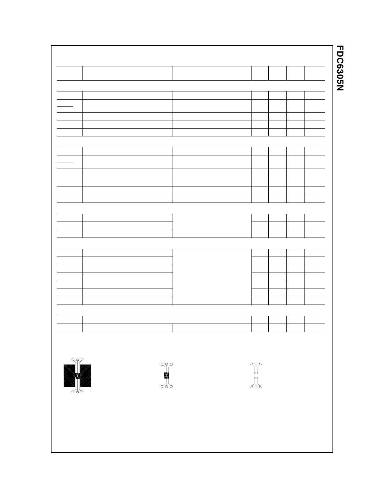

Electrical Characteristics
Symbol
Parameter
TA = 25°C unless otherwise noted
Test Conditions
Min Typ Max Units
Off Characteristics
BVDSS
Drain-Source Breakdown Voltage
VGS = 0 V, ID = 250 µA
20
∆BVDSS
∆TJ
IDSS
Breakdown Voltage Temperature
Coefficient
Zero Gate Voltage Drain Current
ID = 250 µA, Referenced to 25°C
VDS = 16 V, VGS = 0 V
IGSSF
Gate-Body Leakage Current, Forward VGS = 8 V, VDS = 0 V
IGSSR
Gate-Body Leakage Current, Reverse VGS = -8 V, VDS = 0 V
V
14
mV/°C
1
µA
100 nA
-100 nA
On Characteristics (Note 2)
VGS(th)
Gate Threshold Voltage
∆VGS(th)
∆TJ
RDS(on)
Gate Threshold Voltage
Temperature Coefficient
Static Drain-Source
On-Resistance
ID(on)
On-State Drain Current
gFS
Forward Transconductance
VDS = VGS, ID = 250 µA
0.4 0.9 1.5
V
ID = 250 µA, Referenced to 25°C
-2.7
mV/°C
VGS = 4.5, ID = 2.7 A
VGS = 4.5 ID = 2.7 A, TJ = 125°C
VGS = 2.5 V, ID = 2.2 A
VGS = 4.5 V, VDS = 5 V
VDS = 5 V, ID = 2.7 A
0.060 0.080 Ω
0.095 0.128
0.085 0.120
6
A
8
S
Dynamic Characteristics
Ciss
Input Capacitance
Coss
Output Capacitance
Crss
Reverse Transfer Capacitance
VDS = 10 V, VGS = 0 V,
f = 1.0 MHz
310
pF
80
pF
40
pF
Switching Characteristics
td(on)
Turn-On Delay Time
tr
Turn-On Rise Time
td(off)
Turn-Off Delay Time
tf
Turn-Off Fall Time
Qg
Total Gate Charge
Qgs
Gate-Source Charge
Qgd
Gate-Drain Charge
(Note 2)
VDD = 10 V, ID = 1 A,
VGS = 4.5 V, RGEN = 6 Ω
VDS = 10 V, ID = 2.7 A,
VGS = 4.5 V
5
15
ns
8.5 17
ns
11 20
ns
3
10
ns
3.5
5
nC
0.55
nC
0.95
nC
Drain-Source Diode Characteristics and Maximum Ratings
IS
Maximum Continuous Drain-Source Diode Forward Current
VSD
Drain-Source Diode Forward Voltage VGS = 0 V, IS = 0.8 A
(Note 2)
0.8
A
0.77 1.2
V
Notes:
1. RθJA is the sum of the junction-to-case and case-to-ambient resistance where the case thermal reference is defined as the solder mounting surface
of the drain pins. RθJC is guaranteed by design while RθCA is determined by the user's board design. Both devices are assumed to be operating and
sharing the dissipated heat energy equally.
a) 130 °C/W when
mounted on a 0.125 in2
pad of 2 oz. copper.
b) 140 °C/W when
mounted on a 0.005 in2
pad of 2 oz. copper.
c) 180 °C/W on a minimum
mounting pad.
Scale 1 : 1 on letter size paper
2. Pulse Test: Pulse Width ≤ 300 µs, Duty Cycle ≤ 2.0%
FDC6305N, Rev. C